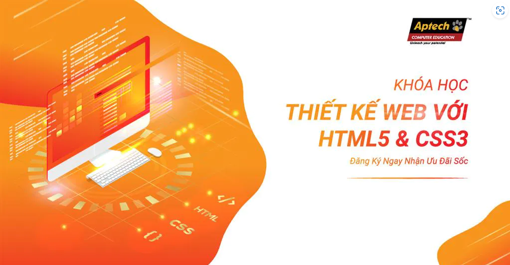

HTML là gì? Tìm hiểu về ngôn ngữ HTML từ A đến Z
Năm 1991, trang web đầu tiên trên internet được hình thành bởi Tim Berners Lee và World Wide Web đã ra đời. Tim Berners Lee đã sử dụng HTML để viết nên các trang web và điều này giúp ông có thể chia sẻ dữ liệu với các nhà khoa học nội bộ. Bài viết này chúng ta sẽ tìm hiểu khái niệm HTML là gì và toàn bộ các nội dung liên quan đến HTML.
HTML là gì?
HTML là từ viết tắt của Hypertext Markup Language, là sự kết hợp của Hypertext và Markup, hay còn được gọi là ngôn ngữ siêu văn bản. HTML có chức năng giúp người dùng xây dựng và cấu trúc các phần trong trang web hoặc ứng dụng, thường được sử dụng trong phân chia các đoạn văn, heading, link, blockquotes,…

Lịch sử của ngôn ngữ HTML
- Cha đẻ của HTML là Tim Berners Lee - nhà vật lý học, là người nghĩ ra ý tưởng dựa trên hệ thống hypertext trên nền internet.
- Năm 1991, xuất bản phiên bản đầu tiên của HTML gồm 18 tag HTML.
- Năm 1998, HTML phiên bản 4.01 ra đời.
- Năm 2000, các phiên bản HTML được thay thế bằng XHTML.
- Năm 2014, HTML được nâng cấp lên HTML5 với sự cải tiến rõ rệt.
Các phần mềm sử dụng để lập trình HTML
-
Phần mềm Notepad ++
Phần mềm Notepad++ là phần mềm miễn phí được nhiều người ưa chuộng với. Ưu điểm của phần mềm này chính là tạo ra môi trường lập trình nhỏ gọn, tiện lợi đi cùng với nhiều tiện ích giúp người dùng tối ưu hóa trong xây dựng website, phần mềm. Hiện nay, phần mềm NotePad++ đã hỗ trợ được nhiều loại ngôn ngữ lập trình khác nhau như: PHP, CSS, C++, Java, C#, XML, HTML, Pascal,…
-
Phần mềm Sublime Text
- Phần mềm Micosoft Visual Code
Một số thuật ngữ HTML thường gặp
Trong HTML có rất nhiều thuật ngữ khác nhau cần người dùng hiểu để có thể sử dụng một các dễ dàng và thuận lợi hơn. Sau đây, chúng ta sẽ tìm hiểu 3 thuật ngữ phổ biến thường xuyên xuất hiện trong tệp HTML, chính là Elements, Tags, Attributes.
- Elements
- Tags
- Attributes
Mục tiêu khóa học
- Tạo web với HTML, HTML5
- Trình diễn, tạo các hiệu ứng trên trang WEB với CSS2, CSS3
- Xử lý các sự kiện, tương tác người dùng trên trang WEB với JavaScript
- Tăng tốc độ xử lý các sự kiện trên trang web với JQuery
- Thiết kế giao diện với Photoshop
- Cắt giao diện từ ảnh thiết kế thành HTML, CSS
- Thiết kế giao diện Web: (Bài tập theo nhóm)
- Tạo trang tin tức
- Tạo trang giới thiệu sản phẩm và bán sản phẩm trực tuyến
Trung Tâm Đào Tạo Lập Trình Viên Softech Aptech
- 38 Yên Bái, Quận Hải Châu, Thành Phố Đà Nẵng
- Điện thoại: 0236.3.779.779
- Email: tuyensinh@softech.vn
- Fax: a 0236.3.779.555